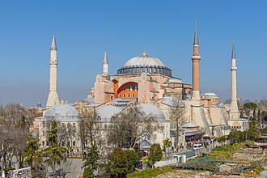

Giới thiệu
Sainte-Sophie est une ancienne basilique byzantine devenue mosquée, située à Istanbul, dans l'ancienne Constantinople, sur le côté ouest du Bosphore.
آيا صوفيا ، أو جامع آيا صوفيا ، عُرف في العصر العُثماني باسم الجامع الكبير الشريف لآيا صوفيا، ، وكان في العصر البيزنطي يُسمى كنيسة آيا صوفيا، التي تعني كنيسة الحكمة الإلهيّة، هو مبنى تاريخي للعبادة، يقع على الضفة الأوروبيَّة في مدينة إسطنبول، أُنشئ في العصر البيزنطي ليكون كاتدرائيةً للبطريركية المسيحية الأرثوذكسية، ثم تحول إلى كاتدرائية رومانية كاثوليكية، وبعد فتح القسطنطينية تحول إلى مسجد عثماني، وبعد قيام الجمهورية التركية تحول إلى متحف، وأخيرًا أُعلن عن إعادته مسجدًا اعتبارًا من 24 يوليو عام 2020، بعد إصدار حُكم المحكمة الإدارية العليا بتركيا بذلك.
Hagia Sophia, officially the Hagia Sophia Grand Mosque, is a mosque and a major cultural and historical site in Istanbul, Turkey. It was formerly a church (360–1453) and a museum (1935–2020). The last of three church buildings to be successively erected on the site by the Eastern Roman Empire, it was completed in AD 537, becoming the world's largest interior space and among the first to employ a fully pendentive dome. It is considered the epitome of Byzantine architecture and is said to have "changed the history of architecture". From its dedication in 360 until 1453, Hagia Sophia served as the cathedral of Constantinople in the Byzantine liturgical tradition, except for the period 1204–1261 when the Latin Crusaders installed their own hierarchy. After the fall of Constantinople in 1453, it served as a mosque, having its minarets added soon after. The site became a museum in 1935, and wa
Ayasofya, resmî adıyla Ayasofya-i Kebîr Câmi-i Şerîfi, İstanbul'un Fatih ilçesinde kiliseden çevrilmiş bir camidir. Bizans İmparatoru I. Justinianus tarafından, 532-537 yılları arasında inşa ettirilmiş bazilika planlı bir patrik katedrali olmuştur. 1453 yılında İstanbul'un Osmanlılar tarafından fethedilmesinden sonra II. Mehmed tarafından camiye dönüştürülmüştür. Mustafa Kemal Atatürk tarafından 1934 yılında yayımlanan kararname ile tadilat çalışmasına alınmış, 1935 yılında Bakanlar Kurulu kararı ile müzeye dönüştürülme kararı alınıp müzeye dönüştürülmüş, kazı ve tadilat çalışmaları başlatılmış ve 1935'ten 2020'ye kadar müze olarak hizmet vermiştir. 2020'de tekrar camiye çevrilmiş, 2024'te ise caminin üst katı bir müze olarak hizmet vermeye başlamıştır.
Hagia Sofia adalah sebuah tempat ibadah di Istanbul, Republik Turki. Dari masa pembangunannya pada tahun 537 M sampai 1453 M, bangunan ini merupakan Katedral Ortodoks dan tempat kedudukan Patriark Ekumenis Konstantinopel, kecuali pada tahun 1204 sampai 1261, ketika tempat ini diubah oleh Pasukan Salib Keempat menjadi Katedral Katolik Roma di bawah kekuasaan Kekaisaran Latin Konstantinopel. Bangunan ini menjadi masjid mulai 29 Mei 1453 sampai 1931 pada masa kekuasaan Kesultanan Utsmaniyah. Kemudian bangunan ini disekulerkan dan dibuka sebagai museum pada 1 Februari 1935 oleh Republik Turki. Kemudian menjadi masjid kembali pada Jumat, 10 Juli 2020 setelah pengadilan Turki memutuskan bahwa konversi Hagia Sofia pada tahun 1934 menjadi museum adalah ilegal. Keputusan ini membuka jalan untuk kembali mengubah monumen tersebut menjadi masjid. Terkenal akan kubah besarnya, Hagia Sofia dipandang s
آیا صوفیہ یا سابقہ نام، آیا صوفیہ گرجا گھر، موجودہ نام آیا صوفیائے کبیر جامع شریفی ، استنبول میں واقع ایک تاریخی عبادت گاہ ہے جو ماضی میں یونانی راسخ العقیدہ مسیحی جامع کیتھیڈرل، رومی کاتھولک کیتھیڈرل، عُثمانی مسجد اور سیکولر میوزیم کے طور پر استعمال ہوتی تھی۔ 10 جولائی 2020ء کو صدر ترکی رجب طیب اردوغان نے حکم دیا کہ اس کو دوبارہ مسجد کے طور پر بحال کیا جائے۔ رومی شہنشاہ جسٹینین اول کے عہد میں اس کی سنہ 537ء میں تعمیر ہوئی، اس وقت یہ دنیا کی سب سے زیادہ جگہ رکھنے والی اور پہلی مکمل محراب دار چھت رکھنے والی جائے عبادت تھی۔ اسے بازنطینی فن تعمیر کا نچوڑ سمجھا جاتا ہے اور کہا جاتا ہے کہ اس کی تعمیر سے "فن تعمیر کی تاریخ بدل گئی"۔
Die Hagia Sophia oder Sophienkirche befindet sich in Eminönü, einem Stadtteil im europäischen Teil Istanbuls. Die von 532 bis 537 n. Chr. erbaute ehemalige byzantinische Kirche wurde von 1453 bis 1935 – und wird wieder seit 2020 – als Moschee genutzt. Von 1935 bis 2020 diente sie als Museum.
Santa Sofía o Hagia Sophia, oficialmente Gran Mezquita de Santa Sofía, es una antigua basílica cristiana, posteriormente convertida en iglesia ortodoxa, más tarde en mezquita, luego en museo y, desde el 1 de agosto de 2020, nuevamente en una mezquita de la ciudad de Estambul, Turquía.
Santa Sofia, ufficialmente nota come Grande Moschea Benedetta della Santa Sofia, conosciuta anche come Basilica di Santa Sofia, è uno dei principali luoghi di culto di Costantinopoli. Si trova nel distretto di Fatih, nel mahalle di Sultanahmet.
Santa Sofia, oficialmente Grande Mesquita de Santa Sofia, é um imponente edifício construído entre 532 e 537 pelo Império Bizantino para ser a catedral de Constantinopla. Da data em que foi edificada, em 537, até 1453, ela serviu nesta função, com exceção do período entre 1204 e 1261, quando ela foi convertida para uma catedral católica romana durante o Patriarcado Latino de Constantinopla que se seguiu ao saque da capital imperial pela Quarta Cruzada. O edifício foi uma mesquita entre 29 de maio de 1453 e 1931, quando foi secularizada. Ela reabriu como um museu em 1 de fevereiro de 1935.
De Hagia Sophia of Ayasofya is een voormalige christelijke, orthodoxe kathedraal, die tegenwoordig als moskee in gebruik is, in de Turkse stad Istanbul. Van 537 tot 1453, toen het huidige Istanbul nog Constantinopel heette, was de Hagia Sophia de grootste kathedraal ter wereld. Na de val van Constantinopel in 1453 werd de kathedraal, onder Ottomaans overheersing, het islamitische gebedshuis (moskee) Ayasofia. In 1934, tijdens het bewind van Atatürk, werd het gebedshuis een museum, en vanaf 2020 werd het opnieuw een moskee. De kathedraal was destijds niet gewijd aan een christelijke heilige, maar aan een van de aan Christus toebedeelde eigenschappen, namelijk die van de "Goddelijke Wijsheid". De Hagia Sophia bevindt zich in het oude stadscentrum van Istanbul op het westelijke, Europese deel, vlak bij de Sultan Ahmet Moskee, de Hippodroom en het Sarnici-waterreservoir. De wijk waar de Hagi
阿亚索菲亚 是位于君士坦丁堡、即现今土耳其伊斯坦布尔的宗教建筑，因原始用途為基督教（東正教會）教堂而又譯為聖索菲亞大教堂，現今則作為伊斯蘭教清真寺而稱為聖索菲亞大清真寺。最初在公元360年落成、並成為君士坦丁堡的主教座堂，415年建成第二代建築，至537年建成今日所見之第三代建築；其以巨大的圓頂而闻名于世，是一幢「改變了建築史」的拜占庭式建築典範。1453年鄂圖曼帝國征服君士坦丁堡後，其從教堂改為清真寺；土耳其建立共和後的1935年改為博物館，至2020年又恢復成為清真寺至今。
아야 소피아 또는 하기아 소피아(그리스어: Αγία Σοφία 고대: 하기아 소피아, 현대: 아야 소피아[*], 영어: Hagia Sophia, 라틴어: Sancta Sophia 상크타 소피아[*], 튀르키예어: Ayasofya 아야소프야[*], ‘거룩한 지혜’라는 뜻)의 정식 명칭은 하기아 소피아 그랜드 모스크이다. 튀르키예의 이스탄불에 있는 동방 정교회 대성당으로 세워졌으며, 현재는 이슬람 모스크 및 정교회 성당으로 사용 중이다. 537년에서 1453년까지는 그리스 정교회 성당이자 콘스탄티노폴리스 세계 총대주교의 총본산이었다. 다만 콘스탄티노폴리스가 라틴 제국에 의해서 점령된 1204년부터 1261년까지는 로마 가톨릭교회의 성당으로 개조되었다가 이후 다시 정교회 성당으로 복귀하였다. 오스만 제국이 콘스탄티노폴리스를 점령한 1453년 5월 29일부터 1931년까지는 모스크로 사용되었고, 1935년에 박물관으로 다시 개장했다. 허나 2020년 7월 10일에 에르도안 대통령의 지시로 다시 박물관에서 모스크로 바뀌었고, 현재는 '하기아 소피아 그랜드 모스크(The Hagia Sophia Grand Mosque)'로 사용되고 있다.
हागिया सोफ़िया तुर्की के इस्तांबुल शहर में स्थित एक मस्जिद तथा पूर्व संग्रहालय और गिरजाघर है। इसका निर्माण पूर्वी रोमन सम्राट जस्टिनियन प्रथम के काल में सन 537 ई में हुआ था। उस समय यह संसार का सबसे बड़ा आन्तरिक स्थानयुक्त गुम्बद था। माना जाता है कि इसने स्थापत्यकला के इतिहास को एक नया मोड़ दिया।
Собо́р Свято́й Софи́и — Прему́дрости Бо́жией, Святая София Константинопольская, Айя-София — памятник архитектуры в Турции. Всемирно известный памятник византийского зодчества, символ «золотого века» Византии. Самое величественное здание юстиниановской эпохи, храм построен в византийской столице в 532—537 годах. Ныне бывший патриарший православный собор, находящийся в историческом центре современного Стамбула в районе Султанахмет. Официальное название сейчас — Большая мечеть Айя-София.
Hagia Sophia ban đầu là một Vương cung thánh đường Chính thống giáo Đông phương, sau là thánh đường Hồi giáo, và nay là một viện bảo tàng ở Istanbul, Thổ Nhĩ Kỳ. Đặc biệt nổi tiếng vì vòm trần lớn, tòa nhà này được xem là hình ảnh mẫu mực của kiến trúc Byzantine, và được coi là đã "thay đổi lịch sử của kiến trúc". Đây từng là nhà thờ lớn nhất thế giới trong gần một ngàn năm, cho đến khi Nhà thờ chính tòa Sevilla hoàn thành vào năm 1520.
ฮาเกียโซเฟีย หรือ อายาโซฟยา แปลว่า "พระปรีชาญาณศักดิ์สิทธิ์" ชื่ออย่างเป็นทางการว่า มัสยิดใหญ่อายาโซฟยาอันศักดิ์สิทธิ์ และในอดีตมีชื่อว่า คริสตจักรฮาเกียโซเฟีย เป็นศาสนสถานจากปลายสมัยโบราณ ตั้งอยู่ในอิสตันบูล ผู้ออกแบบ คือ อีซีดอร์แห่งไมลิทัส และแอนทิเมียสแห่งทรัลเลส ชาวกรีกทั้งคู่ โดยสร้างใน ค.ศ. 537 เพื่อเป็นอาสนวิหารประจำเขตอัครบิดรคอนสแตนติโนเปิล นับเป็นโบสถ์คริสต์ที่ใหญ่ที่สุดของจักรวรรดิโรมันตะวันออกและศาสนจักรอีสเทิร์นออร์ทอดอกซ์ ยกเว้นในสมัยจักรวรรดิละตินช่วง ค.ศ. 1204–1261 ซึ่งศาสนถานนี้กลายเป็นอาสนวิหารคริสตจักรละตินประจำนครแทน ต่อมาใน ค.ศ. 1453 หลังจากที่เสียคอนสแตนติโนเปิลให้แก่จักรวรรดิออตโตมัน ศาสนสถานนี้ก็ได้รับการแปรเปลี่ยนเป็นมัสยิด ใน ค.ศ. 1935 สาธารณรัฐเติร์กซึ่งเป็นกลางทางศาสนาได้จัดศาสนสถานนี้เป็นพิพิธภัณฑ์แทน กระทั่งใน ค.ศ. 2020 จึงมีการเปิดศาสนสถานนี้เป็นมัสยิดอีกครั้ง
Ang Hagia Sophia, opisyal bilang Moskeng Grande ng Hagia Sophia, ay isang moske at pangunahing lugar na pangkalinangan at pangkasaysayan sa Istanbul, Turkiya. Tinayo ng tatlong beses ang gusali ng Silanganing Imperyong Romano. Ikatlo ang kasalukuyang Hagia Sophia na itinayo noong 537 AD. Bagaman tinanggap ang titulo nito bilang isang simbahang ortodokso, isang moske, isang museo, at isang moske uli, dala ng gusali ang isang titulo ng isang Katolikong katedral sa mahabang panahon pagkatapos ng ikaapat na krusada. Sa madaling salita, pagkatapos ng pagtatayo ng Simbahang Ortodokso, tapos ng Katolikong Katedral, tapos ang pananakop ng Otomano ng Istanbul noong Mayo 29, 1453, napalitan ito sa isang moske, pagkatapos ng pagkakatatag ng Republika ng Turkiya, naging museo ito noong 1935, at tapos, naging moske uli noong 2020.
Hagia Sofia är en moské, belägen i den europeiska delen av Istanbul i nordvästra Turkiet.
Hagia Sofia, cunoscută oficial ca Marea Moschee „Ayasofya” este o moschee din Istanbul, Turcia. Lăcașul a fost la origine o biserică construită din ordinul împăratului Iustinian I (527-565) și a servit drept catedrală a Patriarhiei Ecumenice de Constantinopol până în 1453 când a fost transformată în moschee. În anul 1935 regimul secular Atatürk a transformat edificiul în muzeu. Ca un monument de mare valoare istorică și arhitectonică, Hagia Sofia a fost inclusă pe lista monumentelor patrimoniului mondial UNESCO în 1985. Statutul clădirii a stârnit ulterior discuții, iar în iulie 2020 Consiliul de Stat al Turciei a decis că transformarea în muzeu ar fi fost ilegală. La scurt timp s-a anunțat că muzeul va fi reconvertit în moschee, stârnind numeroase critici din partea reprezentanților UNESCO, dar și a unor state precum Grecia. Prima rugăciune de vineri de după anul 1935 a avut loc în data
Câu chuyện và giai thoại
Sự kiện lịch sửMái vòm lớn nhất thế giới
Hoàng đế Byzantine Justinian cho xây Hagia Sophia (“Sự Khôn ngoan Thiêng liêng”) chỉ trong vòng năm năm; công trình hoàn thành năm 537. Khi đó đây là không gian nội thất rộng nhất thế giới, được phủ bởi một mái vòm khổng lồ dường như lơ lửng trên một vòng cửa sổ. Suốt gần một nghìn năm, nó là nhà thờ chính tòa của Constantinople. Sau này, các kiến trúc sư của thánh đường Xanh và Süleymaniye đều tìm cách sánh với nó.
Nguồn: Wikipedia : Hagia Sophia · UNESCO : Historic Areas of Istanbul
Truyền thốngNgày 29 tháng 5 năm 1453: Mehmed II bước vào Hagia Sophia
Ngày 29 tháng 5 năm 1453, vị sultan Ottoman trẻ tuổi Mehmed II chiếm Constantinople. Ông cưỡi ngựa đến tận Hagia Sophia và ra lệnh lập tức biến nó thành thánh đường; một học giả bước lên bục đọc kinh và tuyên đọc lời chứng đức tin. Các biên niên sử kể rằng sultan đã dùng gươm đánh một người lính đang cạy một phiến đá cẩm thạch, và nói rằng các công trình từ nay thuộc về ông. Vào thứ Sáu đầu tiên, ngày 1 tháng 6 năm 1453, ông dự lễ nguyện ở đó. Chi tiết của những cảnh này đến từ các nhà biên niên sử đương thời và có thể đã được tô vẽ.
Nguồn: Wikipedia : Hagia Sophia
Sự kiện lịch sửTám tấm huy chương lớn
Từ năm 1847 đến 1849, sultan Abdülmecid cho các kiến trúc sư người Thụy Sĩ Gaspare và Giuseppe Fossati trùng tu Hagia Sophia. Khi đó người ta treo tám tấm đĩa gỗ khổng lồ, đường kính hơn 7 mét, mang bằng chữ vàng tên của Allah, của Nhà Tiên tri Muhammad ﷺ, của bốn khalip đầu tiên và của hai người cháu ngoại al-Hasan và al-Husayn. Chúng do nhà thư pháp Kazasker Mustafa İzzet Efendi thiết kế. Những tấm huy chương này vẫn được giữ nguyên khi công trình trở thành bảo tàng, rồi lại thành thánh đường.
Nguồn: Wikipedia : Hagia Sophia
Sự kiện lịch sửBảo tàng năm 1934, thánh đường năm 2020
Năm 1934, chính phủ Cộng hòa Thổ Nhĩ Kỳ, do Mustafa Kemal Atatürk lãnh đạo, quyết định biến Hagia Sophia thành bảo tàng; nó mở cửa đón khách năm 1935. Ngày 10 tháng 7 năm 2020, Hội đồng Nhà nước Thổ Nhĩ Kỳ hủy bỏ quyết định này, và tổng thống ra lệnh mở lại công trình cho việc thờ phụng của người Hồi giáo. Lễ nguyện thứ Sáu đầu tiên diễn ra ở đó ngày 24 tháng 7 năm 2020. Các tranh khảm Kitô giáo vẫn được giữ nguyên; một số được che lại trong giờ cầu nguyện, và khách vẫn có thể tham quan ngoài giờ lễ.
Nguồn: Wikipedia : Hagia Sophia
Trên bản đồ
Tài liệu và đường dẫn
- Wikipédia — Français
- Wikipédia — العربية
- Wikipédia — English
- Wikipédia — Türkçe
- Wikipédia — Bahasa Indonesia
- Wikipédia — اردو
- Wikipédia — Deutsch
- Wikipédia — Español
- Wikipédia — Italiano
- Wikipédia — Português
- Wikipédia — Nederlands
- Wikipédia — 中文
- Wikipédia — 日本語
- Wikipédia — 한국어
- Wikipédia — हिन्दी
- Wikipédia — Русский
- Wikipédia — Tiếng Việt
- Wikipédia — ไทย
- Wikipédia — Filipino
- Wikipédia — Svenska
- Wikipédia — Română
- Wikidata — Q12506
Dữ liệu: Wikidata (CC0), cập nhật 3 tháng một lần. Năm là niên đại xây dựng sớm nhất được biết của công trình: với một công trình về sau mới trở thành thánh đường (như Hagia Sophia), đó là năm của công trình ban đầu. Ảnh: Wikimedia Commons, tác giả và giấy phép ở trang của từng ảnh.